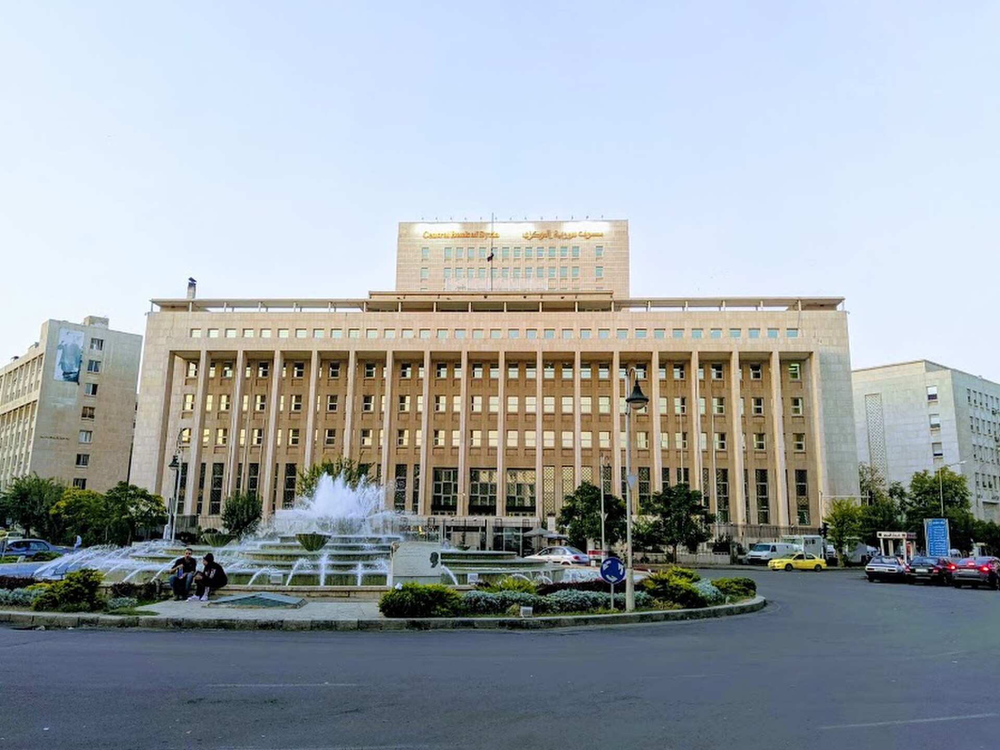

Can Syria reform its banks without reproducing elite capture?

Much of Syria’s reconstruction strategy has centred on attracting large-scale investment from Saudi Arabia, Qatar, the UAE and other international partners into energy, telecommunications, ports, airports and real estate. While these projects are important, they are unlikely on their own to generate broad-based economic recovery. That recovery also rests on improving livelihoods around the country: whether farmers can purchase equipment and small businesses can access working capital. In other words, the success of reconstruction may depend on who can get a loan.
Publication format
External commentary